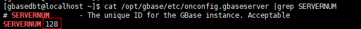

Before backing up the Informix/GBase 8s database, you need to specify the path and file name of the XBSA shared library.
Procedure
- Use PuTTY to log in to the host where the Informix/GBase 8s database is located as user root.
- For an Informix database, run the su - informix command to switch to the Informix database user. For the GBase 8s database, run the su - gbasedbt command to switch to the GBase 8s database user.
- Run the following command to check whether the instance is configured:
cat /Database installation directory/etc/onconfig |grep ^BAR_BSALIB_PATH

Replace onconfig with the actual name of the instance configuration file.
If the following information is displayed, the instance has been configured and no further action is required. Otherwise, proceed with the subsequent operations to configure the instance.
For 1.5.0: Information similar to the following is displayed:
BAR_BSALIB_PATH /usr/openv/lib/libxbsa64iif.so
For 1.6.0 and later versions: Information similar to the following is displayed:
BAR_BSALIB_PATH /Parent directory where the client is installed/DataBackup/ProtectClient/interfaces/xbsa/lib/libxbsa64iif.so
- Run the following command to open the instance configuration file:
vi /Database installation directory/etc/onconfig
- Change the value of BAR_BSALIB_PATH.
- For 1.5.0: Change the value of BAR_BSALIB_PATH to /usr/openv/lib/libxbsa64iif.so.
Example: BAR_BSALIB_PATH /usr/openv/lib/libxbsa64iif.so.
- For 1.6.0 and later versions: Change the value of BAR_BSALIB_PATH to /Parent directory where the client is installed/DataBackup/ProtectClient/interfaces/xbsa/lib/libxbsa64iif.so.
Example: BAR_BSALIB_PATH /opt/DataBackup/ProtectClient/interfaces/xbsa/lib/libxbsa64iif.so.
- For 1.5.0: Change the value of BAR_BSALIB_PATH to /usr/openv/lib/libxbsa64iif.so.
- For a GBase 8s database, perform this step. Otherwise, skip this step.
- Run the following command to view the server ID:
cat /Database installation directory/etc/onconfig |grep SERVERNUM

Replace onconfig with the actual name of the instance configuration file.
- Run the following command to check whether the instance is configured:
cat /Database installation directory/etc/onconfig |grep ^BAR_IXBAR_PATH
If information similar to the following is displayed, the configuration is complete and no further action is required. Otherwise, proceed with the subsequent operations to configure the instance.
BAR_IXBSA_PATH /Database installation directory/backups/ixbar.Server ID
- Run the following command to configure the database instance:
mkdir /Database installation directory/backups; onmode -wf BAR_IXBAR_PATH=/Database installation directory/backups/ixbar.Server ID
- Perform 6.b to verify that the instance is successfully configured.
- Run the following command to view the server ID: